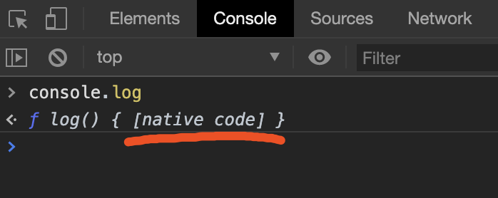

《成为大前端》2.1 Native与JS通信 - 认识JS调用Native
这里介绍一下JS调用Native是怎么回事
JS调用Native
JS调用Native分两部分：
- JS端的代码
- Native端提供的JS接口
JS如何调用到Native，简单来说是JS引擎提供的一种方式。其实平常使用浏览器是，我们一直在调用native的代码，比如：
1 | console.log('Hello word') |
我们在chrome的调试工具下，直接打印console.log这个方法本身，会出现如下图：

说明log方法本身就是一个native方法，通常是由C++写成的，在引擎启动时就已经添加了console的相关方法
WebView中JS调用Native的通道
可以预先了解一下，如下
iOS
1 | let data = ... |
Android
1 | window.someAndroidObj.someFunc("hello world") |
也就是说WebView启动时就已经向js中预置了以上方法，预置的方法方式Android和iOS各不相同。
详情请看Android/iOS的Native与JS通信章节。